Lesson 2: Reading data and plotting facets and curves
Functions for Lesson 2
facet_wrap, facet_grid, geom_smooth, filter
Packages for Lesson 2
ggplot2,dplyr
Agenda
Data visualisation in R for Data Science, Section 3.5.1.
- Do first problem set
- Read in data file
- Plotting facets
- Plotting curves
- Combining plot types
Do First problem set
Before each new session, we’ll do a quick recap, called a Do First. These will only use functions we’ve previously covered, so if you’re unsure or can’t remember, just check the code from the previous session.
Recreate the below plot using the smaller NYC Airbnb dataset (nyc from Lesson 1). There are four aesthetics to change and the plot uses theme_solarized.
Hint: Use the help ? function if something isn’t clear.
# You didn't think we'd make it this easy, did you?
Some useful shortkeys for making R life easier
TAB = autofill rest of function/global variable
CTRL + ENTER = run code
ALT + minus sign = insert assign operator <-
CTRL + SHIFT + M = insert pipe %>%
Run ALT + SHIFT + K for all available shortkeys
Read in data
my_file <- "your_csv_file.csv"
my_data <- read_csv(my_file) # read in the csv data file
glimpse(my_data)
Grouping data
One way to group your data is by colour
my_data <- mpg
my_theme <- theme_classic()
ggplot(data = my_data) + geom_point(mapping = aes(x = displ, y = hwy, colour = class)) + my_theme
Plotting facets
facet_wrap and facet_grid
Facets add a third variable to a plot
The facet function takes a formula as an argument, which is just a data structure, denoted by a tilde ~
facet_wrap
When you have one variable to plot as a facet
ggplot(data = my_data) + geom_point(mapping = aes(x = displ, y = hwy)) + facet_wrap(~class, nrow = 2) +
my_theme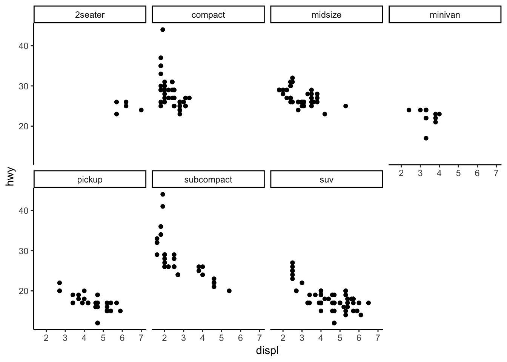
facet_grid
When you know the two variables you want to plot
The formula structure for facet_grid is Y variable ~ X variable, e.g. drv ~ cyl
ggplot(data = my_data) + geom_point(mapping = aes(x = displ, y = hwy)) + facet_grid(drv ~ cyl) + my_theme
You can also replace the X or Y argument in facet_grid with a period (“.”) to plot only one variable.
# Y var
ggplot(data = my_data) + geom_point(mapping = aes(x = displ, y = hwy)) + facet_grid(. ~ cyl) + my_theme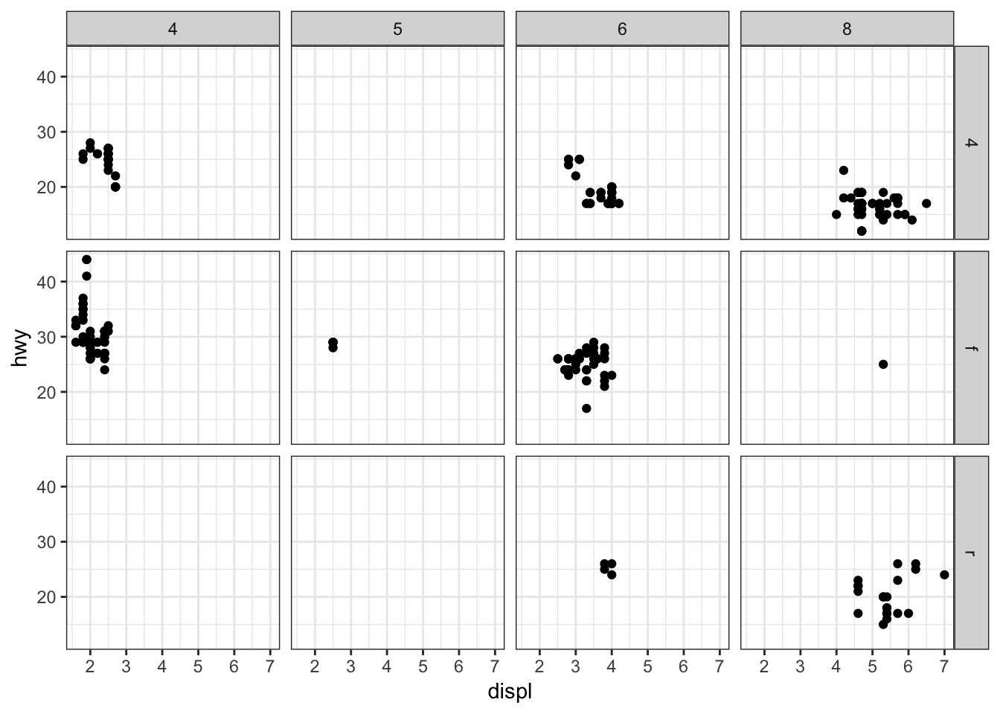
# X var
ggplot(data = my_data) + geom_point(mapping = aes(x = displ, y = hwy)) + facet_grid(drv ~ .) + my_theme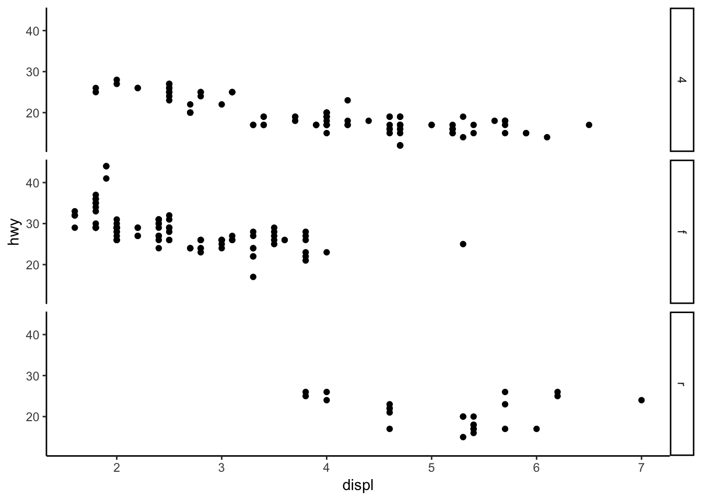
geom_smooth
Plotting points (geom_point) or lines (geom_smooth)
# left
ggplot(data = my_data) + geom_point(mapping = aes(x = displ, y = hwy)) + my_theme
# right
ggplot(data = my_data) + geom_smooth(mapping = aes(x = displ, y = hwy)) + my_theme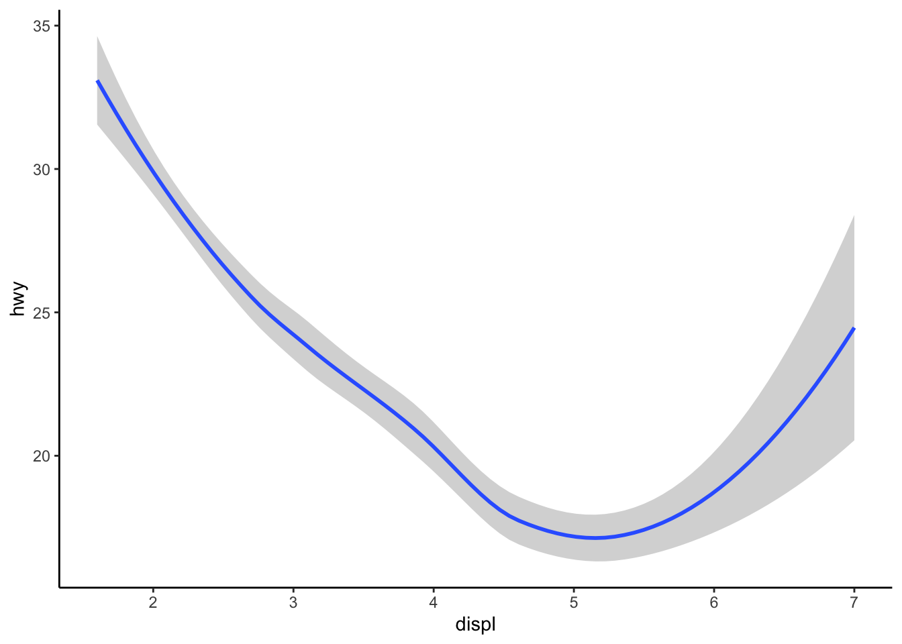
Linetype
Grouping by linetype
ggplot(data = my_data) + geom_smooth(mapping = aes(x = displ, y = hwy, linetype = drv)) + my_theme
Group vs. colour
Using group separates the data into objects …
ggplot(data = my_data) + geom_smooth(mapping = aes(x = displ, y = hwy)) + my_theme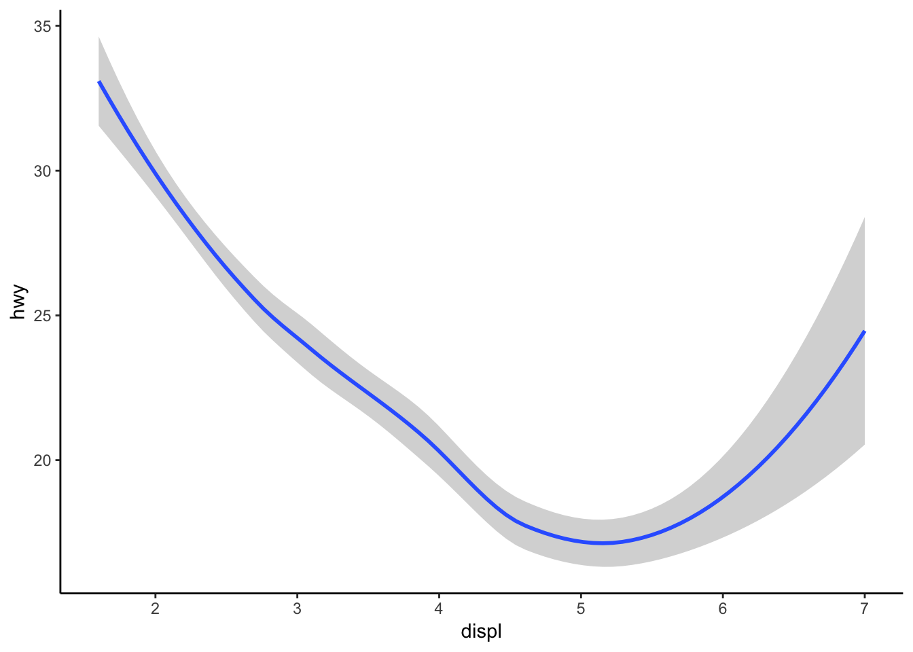
ggplot(data = my_data) + geom_smooth(mapping = aes(x = displ, y = hwy, group = drv)) + my_theme
… but colour will distinguish the differences among these objects
ggplot(data = my_data) + geom_smooth(mapping = aes(x = displ, y = hwy, colour = drv), show.legend = FALSE) +
my_theme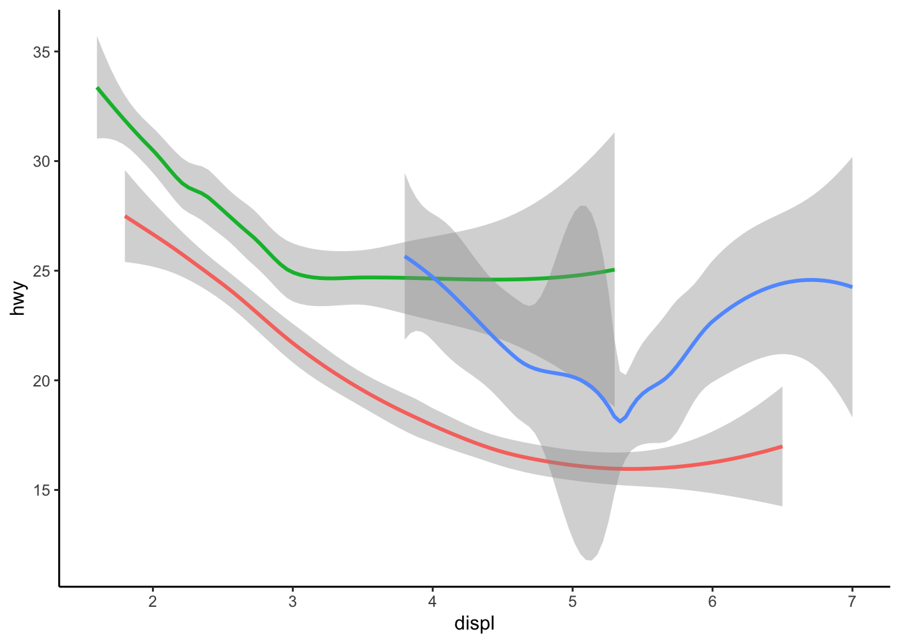
Geometric objects
Adding geoms
Possibly the most useful part of plotting data is layering plot types
ggplot(data = my_data) + geom_point(mapping = aes(x = displ, y = hwy)) + geom_smooth(mapping = aes(x = displ,
y = hwy)) + my_theme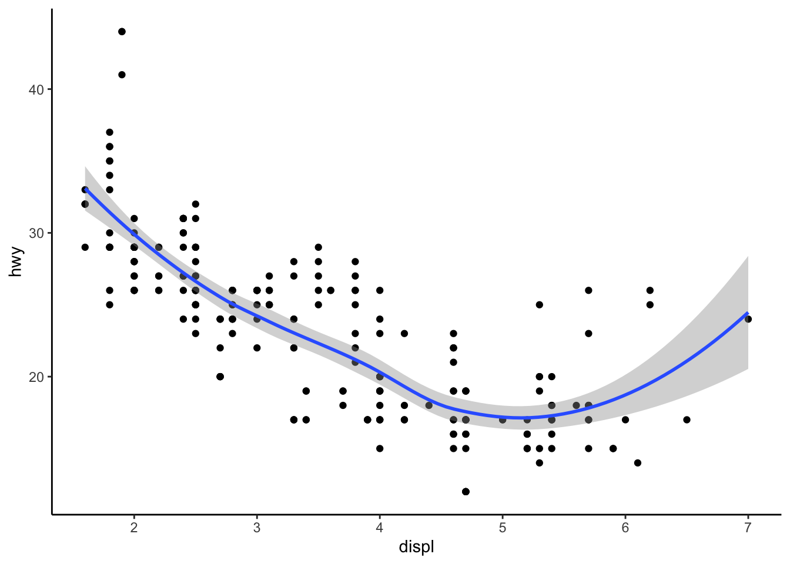
# condensing code
ggplot(data = my_data, mapping = aes(x = displ, y = hwy)) + geom_point() + geom_smooth() + my_theme
# adding aes
ggplot(data = my_data, mapping = aes(x = displ, y = hwy)) + geom_point(colour = "steel blue") + geom_smooth(colour = "#C6BDEA",
fill = "#C6BDEA") + my_theme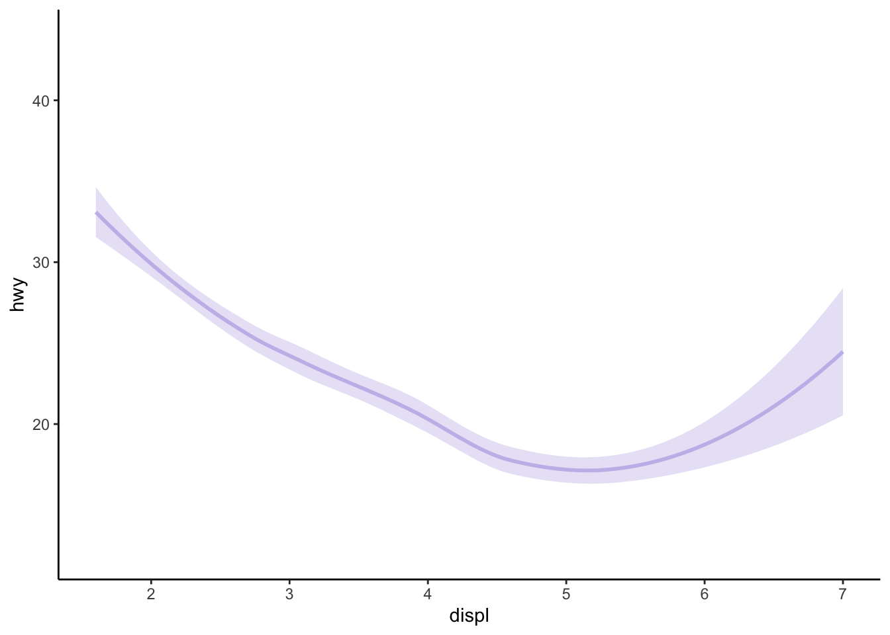
But why does this throw an error?
# adding aes
ggplot(data = my_data) + geom_point(mapping = aes(x = displ, y = hwy)) + geom_smooth() + my_themeError: stat_smooth requires the following missing aesthetics: x, y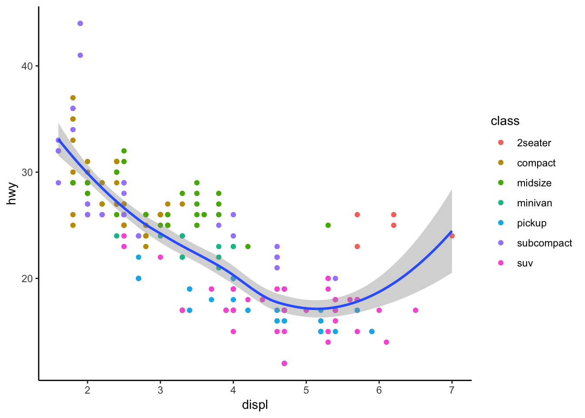
Specifying layers
ggplot(data = my_data, mapping = aes(x = displ, y = hwy)) + geom_point(mapping = aes(color = class)) +
geom_smooth() + my_theme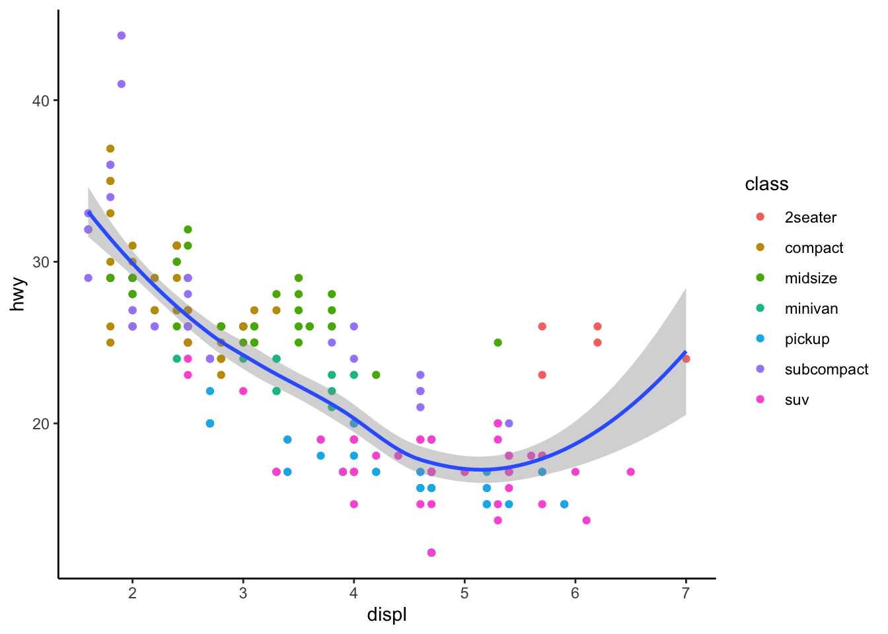
Applying different datasets to one plot (overriding data)
require(dplyr)
names(my_data) [1] "manufacturer" "model" "displ" "year" "cyl" "trans"
[7] "drv" "cty" "hwy" "fl" "class" # subset data with filter
my_data_subcompact <- filter(filter(my_data, class == "subcompact"))
ggplot(data = my_data, mapping = aes(x = displ, y = hwy)) +
geom_point(mapping = aes(color = class)) + # original data
geom_smooth(data = my_data_subcompact, se = FALSE) + # filtered data
my_theme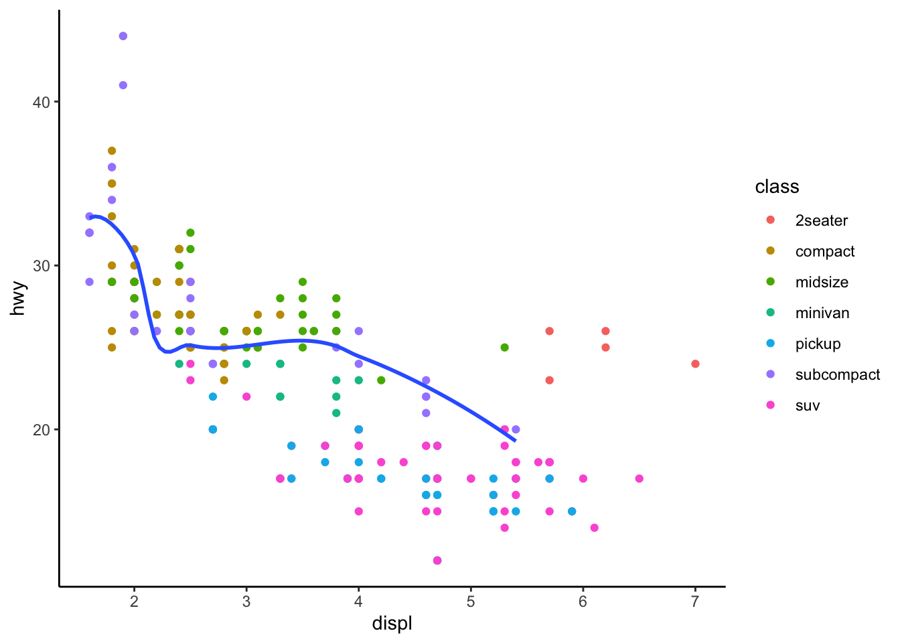
Applying the Airbnb data
Use the new examples on the Airbnb dataset.